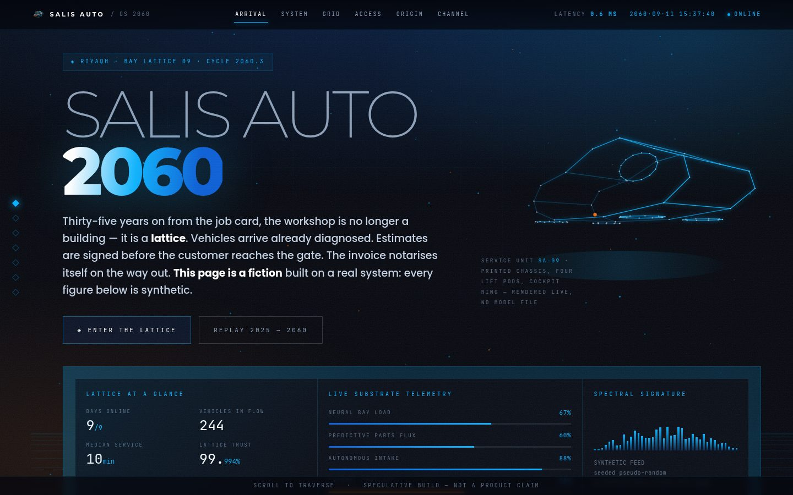

Open ↗
ENTRY 01
SALIS AUTO — Garage OS 2060
Speculative · six pages · dark
The workshop system as it might look thirty-five years out: bays that negotiate their own queue, diagnosis before arrival, an invoice that notarises itself. Every subsystem named in it maps to a module that ships today — the 2060 name sits above, the 2025 name below.
- Arrival, System, Grid, Access, Origin and Channel — six full pages
- Four live canvases: a wireframe vehicle drawn from code, a service-grid map, a supply mesh, a carrier signal
- An interactive command deck — type
help,diag RUH 4821,warp 2038 - Reads complete at rest; honours reduced-motion; works on a phone